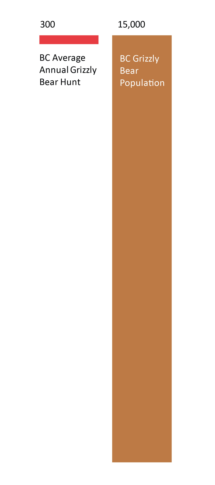

Christopher Morgan, MNRES Student, morganc0@unbc.ca
Overview
British Columbia’s New Democratic Party (NDP) government banned the hunting of grizzly bears in December 2017, citing opposition from First Nations, stakeholder groups, and a public survey revealing that 78% of residents supported a ban (Boynton, 2017; Lazaruk, 2020). Today there are roughly 15,000 grizzly bears in British Columbia, which is about one quarter of the North American grizzly bear population (Environmental Reporting BC, 2012). Historically, the grizzly harvest has averaged 250-300 individuals per year (Lazaruk, 2020; Uechi, 2017).
Opponents
Guide outfitters and their trade association argue that the Province did not take their livelihoods into account when making the decision, nor was the decision based on best practices in wildlife management. The outfitters claim that hunters pay approximately US$25,000 for a single guided grizzly hunt (guided hunts are mandatory for non-residents) and that they had bookings three years into the future (The Canadian Press, 2018). Guide outfitters also point out that their industry is over 100 years old, employs 2,000 people, and contributes $116 million to the provincial economy (Lazaruk, 2020).
The B.C. Wildlife Federation stated there is no scientific basis for the ban, and predicts the death of more prey species like moose, as well as increased grizzly-human conflicts (Lazaruk, 2020). The B.C. Liberals latched onto this opposition, with politicians John Rustad and Peter Milobar denouncing the decision, “It's sad to see the NDP have abandoned scientific-based decision making in favour of political calculus designed to appease U.S.-based environmental groups” (Omand, 2017). They went on to elaborate that the NDP was actually attempting to satisfy environmentalists upset about the progression of the Site C dam project.
Proponents
Conservation groups and the B.C. Green Party lauded the decision, stating that this resolution was one of morality and following the will of the people (Uechi, 2017). Organizations that publicly came out in support include the Grizzly Bear Foundation, Commercial Bear Viewing Association, Wilderness Committee, and Raincoast Conservation (Lazaruk, 2020; Omand, 2017; Uechi, 2017).
Proponents also asserted that bear-viewing has a far greater economic impact than hunting. A portion of each guided hunt fee had gone to conservation efforts, so the 70 B.C. bear-watching guides have teamed up to offset this loss with an equal fee on their trips, generating three times as much funding as the hunt had annually (Lazaruk, 2020). In 2019 this meant $114,500, half of which went to the Grizzly Bear Foundation and their conservation efforts, with the other half used to support the Nanwakolas Council, a group of First Nations that own the bear-viewing Knight Inlet Lodge and who support the conservation of grizzly bears on the coast (Lazaruk, 2020).
Indigenous Perspectives
First Nations retain the right to harvest bears for food, social, or ceremonial purposes under Aboriginal and treaty rights (Omand, 2017). Not all governments support the ban though, with the Tahltan and Iskut First Nations claiming they were not consulted and voicing layered concerns about the implications of the hunting ban. “It has hurt our people culturally, economically and put many of British Columbia's communities and dwindling ungulate and salmon populations at further risk," said Chad Day, president of the Tahltan Central Government (The Canadian Press, 2018).

Developments
- A class-action lawsuit was filed against the province in 2019 by the Guide Outfitters Association of B.C., and is scheduled to be heard in March 2020 (Lazaruk, 2020). The suit claims that proper consultation did not take place, and that government data suggests a harvest even larger than was previously allowed would be sustainable for the population. Furthermore, since the plaintiffs argue that this decision was not based on science, that the Ministry of Forests does not even have the authority to regulate the grizzly bear hunt in these circumstances. They are seeking financial compensation for damages (The Canadian Press, 2018).
- Since the hunt was closed, there have been 13 reports of illegal harvest. In addition to poaching, illegal kills include, “[S]elf-defence without reporting the incident or a found grizzly bear where the use of a firearm is considered the cause of death,” according to a spokesperson from the Ministry of Forests, Lands, Natural Resource Operations and Rural Development (Lazaruk, 2020).
- Bear-viewing tourism has continued to grow since the ban was implemented. While guides maintain that each hunter brings in $25,000, bear-viewing advocates say that tours charge an average of $400-a-night per person, and that visitors spend roughly an additional $10,000 a week in the province (Lazaruk, 2020). They argue that in fact there’s much more money in shooting grizzly bears with zoom lenses rather than scopes.
References
Boynton, S. (2017, October 3). Poll suggests majority of British Columbians support complete ban on grizzly bear hunt. Global News. https://globalnews.ca/news/3783305/poll-suggests-majority-of-british-columbians-support-complete-ban-on-grizzly-bear-hunt/
Environmental Reporting BC. (2012). Grizzly Bear Population Status in B.C. (State of Environment Reporting). Ministry of Environment. http://www.env.gov.bc.ca/soe/indicators/plants-and-animals/grizzly-bears.html
Lazaruk, S. (2020, January 13). Thirteen grizzlies illegally killed in the past two years despite B.C.’s ban on hunting the bears. Vancouver Sun. https://vancouversun.com/news/local-news/thirteen-grizzlies-killed-in-the-past-two-years-despite-b-c-s-ban-on-hunting-the-bears
Omand, G. (2017, December 18). B.C. bans grizzly bear hunt, effective immediately. CTV News. https://www.ctvnews.ca/canada/b-c-bans-grizzly-bear-hunt-effective-immediately-1.3726402
The Canadian Press. (2018, December 19). Hunting guide files lawsuit against province over B.C. grizzly hunt ban. CBC. https://www.cbc.ca/news/canada/british-columbia/hunting-guide-files-lawsuit-against-province-over-b-c-grizzly-hunt-ban-1.4953496
Uechi, J. (2017, December 18). B.C. government announces end of grizzly hunt. Canada’s National Observer. https://www.nationalobserver.com/2017/12/18/news/bc-government-announces-end-grizzly-hunt